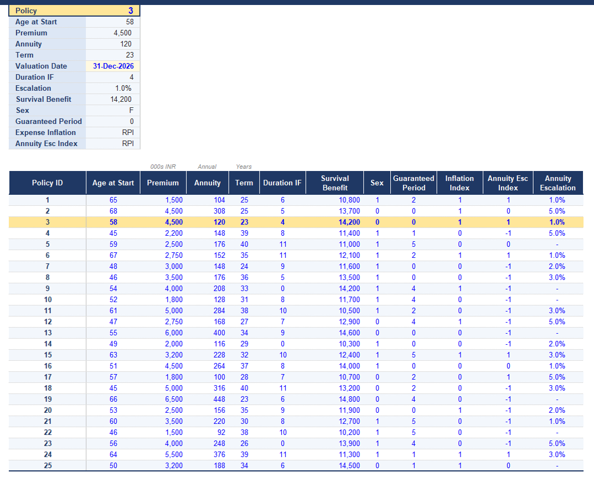
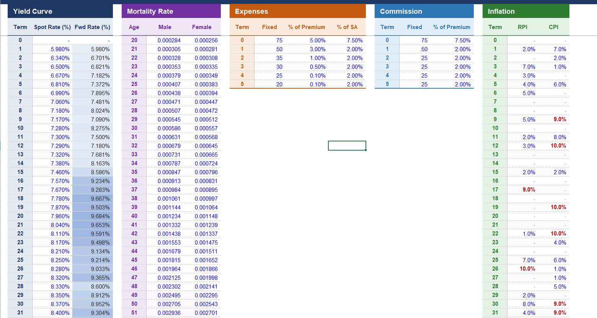
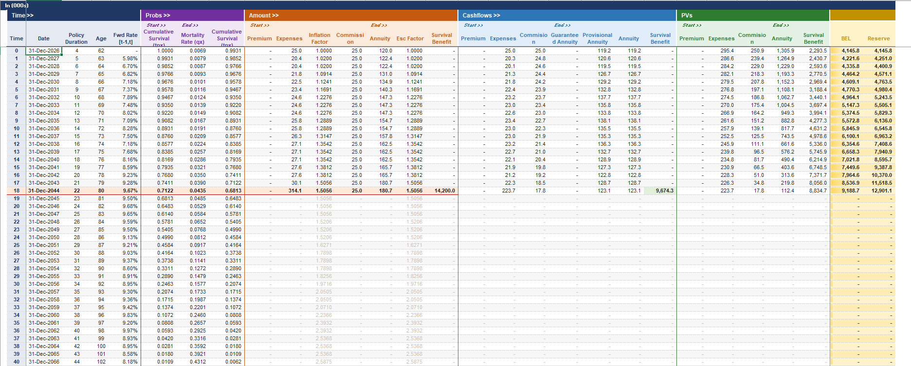

Policy-level projection
Projects individual annuity contracts through their full term.
Models · Case Study
An Excel-based actuarial model for projecting annuity cash flows, survival benefits and policy-level reserves — built with configurable mortality, discounting and policy assumptions, and a Python rebuild in progress.
I built an Excel-based actuarial model to project future annuity cash flows and calculate policy-level reserves under specified mortality, interest-rate and policy assumptions. The model is organised as a single directional pipeline, from raw policy data through to a portfolio-level reserve summary.
The reserve isn't one formula — it's five steps chained together, each feeding the next, mirroring how the model's BEL sheet actually walks each policy forward year by year. Starting from age- and sex-specific mortality, the model builds up the odds a policyholder is still alive in each future year, uses that to weight every cash flow — premiums coming in, expenses, commission and annuity payments going out — discounts each by the forward yield curve, and sums the result into a single best-estimate liability per policy.
The single-year mortality rate at each attained age, held separately by sex.
Symbols q = mortality rate · x = age at entry · k = future year
A sanitised look at the input interface, assumption module and projection table. The underlying workbook itself isn't distributed publicly.



Projects individual annuity contracts through their full term.
Applies survival probabilities throughout the projection.
Supports increasing annuity payments over time.
Discounts projected cash flows using valuation assumptions.
Calculates policy-level present values.
Tests changes in key assumptions.
Reduces manual intervention through structured formulas.
Cross-checks outputs and intermediate calculations.
Aggregates policy-level results into portfolio metrics.
Validation is treated as part of the calculation, not an afterthought.
All figures below use synthetic demonstration data, not real employer or client data.


The Excel model is the initial calculation framework. A Python rebuild is in development to improve scalability, reproducibility and automated validation.